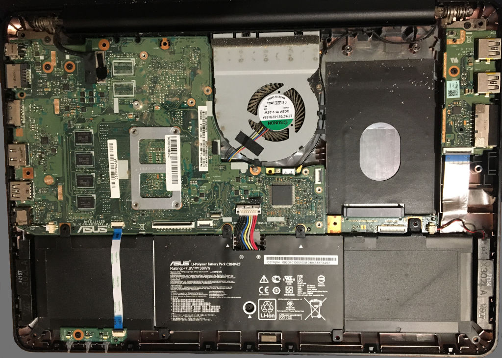

<html>
	<head>
		<title>ASUS F302LA-FN067H</title>
		<link rel="stylesheet" href="stylesheet.css">
	</head>
</html>

<header>
	<a href="index.html">Home</a><br>
	<h1>ASUS F302LA-FN067H</h1>
</header>
<div class="flex-container">
	<div>
		<h2>Specifications</h2>
		<table class="specifications">
			<tr>
				<td>Model name</td><td>ASUS F302LA-FN067H</td>
			</tr>
			<tr>
				<td>CPU</td><td><a href="https://ark.intel.com/content/www/us/en/ark/products/85212/intel-core-i55200u-processor-3m-cache-up-to-2-70-ghz.html">Intel Core i5-5200U</a></td>
			</tr>
			<tr>
				<td>Memory</td><td>4 GB DDR3L (+ one upgrade slot)</td>
			</tr>
			<tr>
				<td>Storage</td><td>1 TB 2.5&Prime; SATA Toshiba HDD</td>
			</tr>
			<tr>
				<td>Graphics</td><td>Intel HD 5500</td>
			</tr>
			<tr>
				<td>Screen resolution</td><td>1366x768</td>
			</tr>
			<tr>
				<td>External connections</td><td>1 x LAN, 1 x USB 3.0, 2 x USB 2.0, 1 x VGA, 1 x HDMI</td>
			</tr>
			<tr>
				<td>Battery</td><td>ASUS C21N1423, 7.6 V, 38 Wh</td>
			</tr>
		</table>
		<figure>
		
		<figcaption>Inside of a used ASUS F302LA-FN067H with the hard drive removed.</figcaption>
		</figure>
	</div>
</div>

